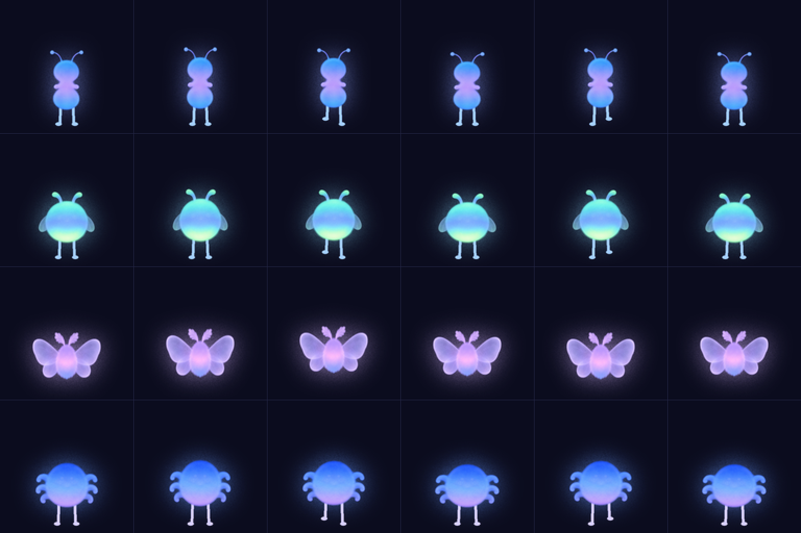
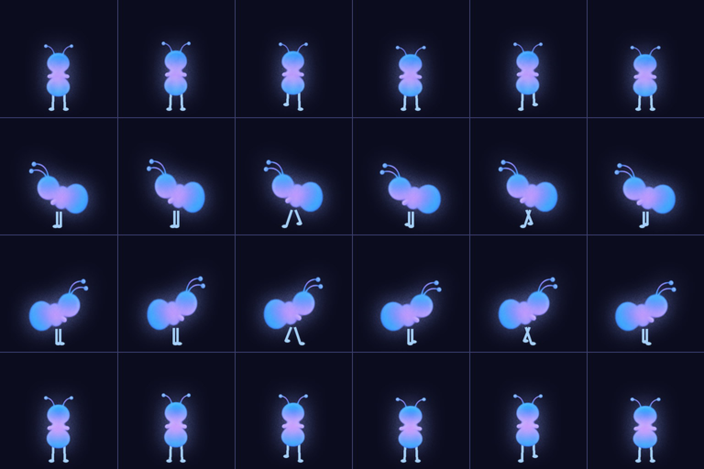
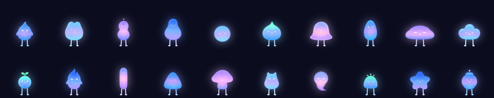

A관람 전과 관람 후를 다른 페이지로
장면의 의미를 미리 읽으면 전시장에서 직접 알아차릴 몫이 줄어듭니다. 그래서 사전 웹은 장면 이름과 분위기, 공간과 관람 정보까지만 보여 주고, 장면 해석과 질문은 AWAKE로 옮겼습니다.
- INDEX의 SCENES는 장면 사진과 짧은 예고 문구만
- AWAKE는 부스 PC에서 관람을 마친 관객에게 열어 줌
- AWAKE 첫 문구가 “AFTER THE EXPERIENCE”
INTERACTIVE WEB · LIMEN
LIMEN 전시 웹 3종 — 사전 웹 · AWAKE · 방명록
AI 협업
LIMEN 전시의 앞과 뒤를 맡은 웹입니다. 관람 전에는 사전 웹(INDEX)에서 세계관과 관람 정보를 보고, 4면 전시장을 지난 뒤에는 부스 PC의 AWAKE에서 장면의 의미를 다시 읽고, 마지막으로 방명록에 사진과 한 마디를 남깁니다. 디자인팀(김노은 · 조가연)의 피그마 시안을 받아 세 웹의 구현과 배포를 맡았습니다.
더 보기방명록 캐릭터 프로토타입 ↗초기 HERO 시안 ↗AWAKE 물결판 ↗GitHub 저장소 ↗전시 · 인터랙션 페이지 →
전시장에 들어가기 전부터 나온 뒤까지
LIMEN은 관객의 몸에 반응하는 4면 프로젝션 전시입니다. 웹은 전시장 안의 경험(LUCID DREAM)을 앞뒤로 감싸도록 세 개로 나눴습니다. 같은 도메인, 같은 색 · 서체를 쓰지만 보는 시점과 장소, 실행 방식이 각각 다릅니다.
보라색 칸이 웹입니다. 전시장 안의 인터랙션 개발은 LIMEN 전시 페이지에 따로 정리했습니다.
세 개로 나눈 이유
처음 팀이 정한 구조는 INDEX와 서브페이지 4개(ABOUT · TECHNOLOGY · ARCHIVE · AWAKE)로 된 5페이지 사이트였습니다. 구현을 진행하며 보는 시점과 실행 환경을 기준으로 다시 나눴고, 최종 구조는 아래와 같습니다.
장면의 의미를 미리 읽으면 전시장에서 직접 알아차릴 몫이 줄어듭니다. 그래서 사전 웹은 장면 이름과 분위기, 공간과 관람 정보까지만 보여 주고, 장면 해석과 질문은 AWAKE로 옮겼습니다.
10.26에 ABOUT · TECHNOLOGY · ARCHIVE 서브페이지까지 구현했지만, 11.19 디자인팀의 최종 피그마가 INDEX와 AWAKE 두 프레임으로 정리되었습니다. 서브페이지에 있던 기획 의도 · 공간 · 관람 안내를 INDEX 한 스크롤에 모으고, 팀 소개는 별도 페이지 대신 헤더에서 내려오는 층으로 바꿨습니다.
두 페이지는 전시 직전까지 하루에도 여러 번 고쳤습니다. 한쪽 수정이 다른 쪽을 깨지 않도록 스크롤 엔진 · 구간 스크립트 · 스타일을 파일 단위로 나누고, 헤더와 프로필 층만 같은 CSS를 읽게 했습니다.
방명록은 카메라로 사진을 찍고, 찍은 사진을 원본 화질로 남겨야 했습니다. 인터넷 없이도 돌도록 서버와 DB 없이 부스 PC 한 대에서 로컬로 실행했고, 글은 브라우저에, 사진은 PC의 다운로드 폴더에 jpg로 저장했습니다. 전시가 끝난 뒤 그 사진을 온라인 아카이브로 공개했습니다.
03 · BEFORE
전시의 질문에서 시작해 기획 의도 → 세 가지 키워드 → 장면 예고 → 관객 경험 → 공간 → 관람 안내 순서로 내려가는 원스크롤 페이지입니다. 스크롤 하나가 모든 구간의 움직임을 이끌도록, 휠 입력을 받는 스크롤 엔진과 매 프레임 갱신하는 루프를 하나로 묶었습니다.
구간별 역할과 인터랙션
01HERO
역할LIMEN 로고와 “Between Reality and Dream”, 전시 무드 이미지
data-lag 틀별 지연 · data-reveal 줄 등장
02QUESTION
역할전시 전체의 질문을 한 화면에 단독으로
position: sticky · 글자 span 분해 · 진행도 → 글자별 밝기
03CONCEPT
역할전시를 만든 이유를 짧은 글로
layoutConcept() 리사이즈마다 재계산
04KEYS
역할전시가 말하는 세 가지 인식의 순간
charState(chars, v, dir, stagger) 진행도 → 글자별 blur · translateY
05SCENES
역할장면 이름과 분위기만 미리 보여 주는 예고
data-par 틀 중심과 화면 중심의 거리 × k
06EXPERIENCE
역할전시 현장 영상으로 “몸에 반응하는 전시”임을 보여 줌
updateExpFilm() · lenis.stop() / start()
07INSIDE LIMEN
역할정보관 8층 호라이즌 스튜디오의 4면 공간과 장비 설명
THREE.ShaderMaterial GLSL 투사 · SVG stroke-dashoffset 선 그리기
08VISIT · FOOTER
역할전시 기간 · 운영 시간 · 장소 · 캠퍼스 안내, 팀 이름
녹화본은 푸터 배경 영상을 가린 상태입니다.
INDEX 기능 정리
| 기능 | 동작 | 구현 |
|---|---|---|
| 부드러운 스크롤 | 한 칸 굴리면 천천히 출발 → 가속 → 미끄러지듯 멈춤, 연달아 굴리면 속도가 끊기지 않고 이어짐 | 임계 감쇠 스프링(smooth.js). position: sticky가 깨지지 않도록 transform 대신 실제 window 스크롤을 움직임. Lenis와 같은 API로 만들어 기존 코드를 그대로 씀 |
| 앵커 이동 | 로고 · 푸터 버튼으로 해당 구간까지 이동 | data-goto → easeInOut 트윈 |
| 등장 | 줄 단위로 올라오고, 아래로 빠지면 되돌아가 다시 등장 | IntersectionObserver |
| 시차 · 떠다니는 배경 | 이미지가 늦게 따라오고, 고정 배경 안개가 스크롤 일부만큼만 움직임 | data-par · data-drift · data-lag |
| 팀 프로필 층 | 햄버거를 누르면 위에서 팀 프로필이 내려옴(별도 페이지 아님), 다시 누르거나 Esc로 닫힘 | inert · aria-expanded, 열린 동안 스크롤 정지 |
| 해상도 대응 | 1920 기준 비율(--u = 화면 폭 / 1920)로 커지고, 1920보다 큰 화면에서는 고정 px로 남은 SPACE · 푸터 글자도 같은 비율로 키움 | screen-scale.css |
04 · AFTER
방금 지나온 장면을 다시 고르고, 각 장면에 담긴 질문을 읽고, 전시의 색 · 서체 · 포스터를 둘러본 뒤 일상으로 가져갈 질문 하나로 끝나는 페이지입니다. 디자인팀 피그마 프레임(1920 폭)의 모든 요소를 같은 좌표에 놓아, 1920 화면에서 시안과 1:1로 맞췄습니다.
?overlay 피그마 겹쳐 보기구간별 역할과 인터랙션
01INTRO
역할관람 후 페이지라는 것을 첫 화면에서 알림
02RETRACE
역할기억에 남은 장면을 고르게 하는 카드 5장
data-rt)로 사진과 글을 한 묶음으로 처리03MEANING
역할사전 웹에서 아껴 둔 장면 해석을 여기서 공개
--shift로 계산해 통째로 내림04KEYS
역할INDEX의 세 키워드를 관람 후의 뜻으로 다시 설명
05–08DESIGN SYSTEM
역할전시 그래픽의 색 5개 · 서체 · 질감 · 상징을 관객에게 공개
Clipboard API · runScramble()
09POSTER ARCHIVE
역할전시 포스터 6장을 공간 속에서 하나씩 만나게 함
CSS 3D 없이 원근 계산을 직접 · SVG path 투영 · sticky 100vh 무대
10–11QUESTION · LEAVE A THOUGHT
역할일상으로 가져갈 질문을 남기고, 전시장 밖 포스터에 생각을 적도록 안내
Pointer Events · 카드 자리 k = −5…5, 각도 11° × k
12FOOTER
역할마지막 문장과 INDEX로 돌아가는 링크
피그마 그대로 배치하기
요소마다 피그마의 x · y · 폭을 --x · --y · --w로 적고, CSS에서 calc(var(--x) * 100vw / 1920)로 놓았습니다. 1920 폭에서는 피그마와 같은 자리, 다른 폭에서는 같은 비율로 줄어듭니다. 글이 늘어난 구간만 아래 구간 묶음을 --shift로 내려 시안 구조를 지켰습니다.
주소 뒤에 ?overlay를 붙이면 피그마 전체 캡처를 반투명으로 겹쳐 봅니다(O 켜기 · [ ] 투명도 · D 차이). 대조 스크립트로 요소 좌표를 비교해 INDEX는 대조 요소 모두 1px 이내, AWAKE는 대부분 0 – 1px 안에서 맞췄습니다.
05 · GUESTBOOK
관객이 남긴 글 하나가 전시 속 생명체 모양의 빛 캐릭터 하나가 되어 밤 들판을 걸어 다니고, 가끔 멈춰 말풍선으로 그 글을 보여 줍니다. 사진을 찍어 남기면 캐릭터가 그 사진을 들고 다닙니다. 전시 장면의 반딧불이 · 밤 들판 톤을 그대로 가져와 관람의 마지막 장면처럼 만들었습니다.
전시장 방명록
01마당
역할남긴 사람 수만큼 들판이 채워지는 첫 화면
시드 해시(FNV) → 난수 · 배경은 한 번 그려 두고 오로라 · 안개 · 반딧불이만 매 프레임
02글쓰기
역할관객이 직접 남기는 마지막 참여
LIMEN방명록_날짜_시간_이름.jpg로 저장getUserMedia · <dialog> · Canvas → JPEG · 녹화본은 브라우저 테스트 카메라와 시연용 글로 촬영
03방명록 보기
역할마당에는 최근 글만 걷고, 전체 글은 목록으로
글 = localStorage · 사진 = IndexedDB(용량이 커서 분리)
캐릭터
처음에는 물방울 · 땅콩 · 구름 같은 사물 모양의 빛 정령 20종이었고, 전시 직전 개미 · 반딧불이 · 나방 · 거미 — 전시에 나오는 생명체 모양으로 바꿨습니다. 스스로 빛나는 말랑한 몸, 파랑에서 라벤더로 번지는 색은 그대로 두었습니다. 그림은 이미지 생성으로 만든 뒤 Python으로 걷기 스프라이트 시트로 변환하고, 눈 깜빡임과 걷는 다리는 코드로 그렸습니다.



온라인 사진 아카이브
04ARCHIVE
역할전시 이틀(11.21 – 22) 동안 남긴 방명록 사진을 전시 후 공개
entries.json(촬영 시각 · 이름) · <dialog> · 녹화본은 관람객 얼굴 · 이름을 흐리게 처리
방명록 첫 판은 QR로 여는 공개 웹 프로토타입(지금의 guestbook-v1)이었고, 전시에서는 카메라 촬영과 사진 원본 저장을 넣은 로컬판을 부스 PC에서 실행했습니다. 로컬판은 Windows 실행 파일과 Mac 실행 스크립트로도 묶어 Python · Node 설치 없이 띄울 수 있게 했습니다.
세 웹 모두 프레임워크 없이 HTML · CSS · JavaScript(ES Module)로 만들었습니다. 라이브러리는 꼭 필요한 곳에만 쓰고, 스크롤 · 등장 · 시차 같은 공통 동작은 직접 만든 코드로 통일했습니다.
| 기술 | 쓴 곳 | 무엇을 했나 |
|---|---|---|
| Three.js r185 | INDEX | INSIDE LIMEN 3D 공간 모델 · 카메라 이동, 프로젝터 면별 영상 투사(GLSL ShaderMaterial). importmap으로 ES Module 로드. 이전 시안의 유리 오로라 HERO · AWAKE 수면 타이틀에도 사용 |
| 직접 만든 스크롤 | INDEX | smooth.js — 임계 감쇠 스프링, sticky 유지를 위해 실제 window 스크롤 이동, Lenis와 같은 API(scroll · scrollTo · stop · start) |
| Lenis 1.1.13 | AWAKE | 관성 스크롤(lerp 0.1), 앵커 이동 · 리모컨 이동 |
| SVG | INDEXAWAKE | 공간 도면 선 그리기, 포스터 아카이브의 3D 곡선 원근 투영 |
| IntersectionObserver | INDEXAWAKE방명록 | 줄 · 글자 등장, 영상은 보일 때만 재생, 아카이브 카드 등장 |
| requestAnimationFrame | INDEXAWAKE방명록 | 페이지마다 프레임 루프 하나에서 스크롤 진행도 → 구간 상태 갱신 |
| Canvas 2D | 방명록 | 밤 들판 배경(한 번 그려 둠) · 오로라 · 안개 · 반딧불이 · 캐릭터 · 빛 웅덩이, 원근 크기 |
| MediaDevices | 방명록 | getUserMedia 카메라(1920 × 1080 요청), 촬영 프레임을 Canvas에서 JPEG로 |
| localStorage · IndexedDB | 방명록 | 글은 localStorage, 사진은 IndexedDB에 원본 화질로. JSON 백업 · 불러오기, 중복 방지 |
| <dialog> · Pointer Events | AWAKE방명록 | 글쓰기 창 · 사진 크게 보기, 질문 카드 끌어서 돌리기, 아카이브 스와이프 |
| Clipboard API | AWAKE | 색 견본 HEX 복사 |
| 글꼴 | INDEXAWAKE방명록 | Pretendard(11.22 메인 글꼴로 교체) · Noto Sans KR · Inter · Heebo · Anton, 방명록 Galmuri(로컬 포함) |
| Python · Pillow | 제작 | 방명록 캐릭터 그림 → 스프라이트 시트 변환 · 규격 검사, 피그마 대조 검증 스크립트 |
| C# · Go | 제작 | 방명록 로컬 실행기 — 폴더의 파일을 127.0.0.1에서 띄우고 Chrome을 여는 작은 서버 |
| Figma | 디자인 | 디자인팀 시안 · 웹 최종 프레임(1920), 좌표 기준 |
| GitHub · Vercel | 배포 | snooze.design 도메인. 경로 재작성으로 사이트는 /limen/ 아래, 방명록은 /guestbook/, 이전 시안은 하위 폴더로 공개 유지 |
초기 시안(INDEX v01 · DRIFT · COMBINE)은 GSAP · ScrollTrigger로 만들었고, 최종 INDEX는 프레임 루프 하나에서 스크롤 진행도로 모든 구간을 계산하는 방식으로 바꿨습니다.
07 · DEVELOP
같은 저장소에 시안마다 폴더를 남기며 공개했고, 팀은 주소로 바로 열어 비교했습니다. 아래 영상은 모두 그 폴더를 지금 브라우저로 다시 열어 녹화한 것입니다.
| 항목 | 시안 단계 | 전시판 |
|---|---|---|
| 페이지 구성 | INDEX + ABOUT · TECHNOLOGY · ARCHIVE · AWAKE | INDEX · AWAKE 2페이지, 팀 소개는 헤더 프로필 층 |
| 스크롤 | GSAP · ScrollTrigger, Lenis | INDEX는 스프링 스크롤 + 프레임 루프 하나, AWAKE는 Lenis |
| 배치 | 레퍼런스 무드를 따라 자유 배치 | 피그마 웹 최종 좌표 그대로, 겹쳐 보기로 대조 |
| AWAKE 인터랙션 | 배경 영상 전환 · 렌즈 · 물결 | 등장은 제목에만, 장면 포커싱 · 포스터 카메라 · 질문 카드에 집중 |
| 방명록 | QR로 여는 공개 웹, 글만 저장 | 부스 PC 로컬판, 카메라 · 사진 원본 저장 · 백업, 전시 후 아카이브 |
전시 기간에도 고쳤습니다. 11.20 큰 화면(2560 × 1440) 배율 보정에 이어 11.21 전시장 화면에서 해상도별 위치와 공간 포커스 잘림을 보정하고 헤더 숨김 · 화면 배율을 손봤고, 11.22에는 메인 글꼴을 Pretendard로 바꿨습니다.
| 영역 | 담당 |
|---|---|
| 웹 UX / UI 디자인 (피그마 시안) | 김노은 · 조가연 |
| 웹 구현 · 인터랙션 · 방명록 · 배포 | 유기상 |
| 장면 영상 (AWAKE · INDEX에 쓰인 영상) | SNOOZE 영상팀 · 전시 녹화 |